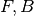

AsymmetryCalc dialog.
Table of Contents
| Name | Direction | Type | Default | Description |
|---|---|---|---|---|
| InputWorkspace | Input | MatrixWorkspace | Mandatory | Name of the input workspace |
| OutputWorkspace | Output | MatrixWorkspace | Mandatory | The name of the workspace to be created as the output of the algorithm |
| ForwardSpectra | Input | int list | The spectra numbers of the forward group | |
| BackwardSpectra | Input | int list | The spectra numbers of the backward group | |
| Alpha | Input | number | 1 | The balance parameter (default 1) |
This algorithm is used to calculate the asymmetry for a Muon workspace.
It first groups the input workspace according to the spectra numbers
provided as ForwardSpectra and BackwardSpectra. If these properties
are not supplied, the algorithm assumes that the first spectrum in the
workspace is the forward group and the second one is the backward
group. It then calculates the asymmetry,  , as:
, as:

where  is the front spectra,
is the front spectra,  is the back spectra
and
is the back spectra
and  is the balance parameter [1].
is the balance parameter [1].
The error in ,  is calculated using standard error propagation. First the errors in
is calculated using standard error propagation. First the errors in  and
and  are calculated
by adding the errors in and in quadrature ( is assumed to have no error);
are calculated
by adding the errors in and in quadrature ( is assumed to have no error);

Then the error in the asymmetry is given by;

using the fact that the errors on counts  can be taken to be Poisson errors ( ,
,  ), this can be simplified to
), this can be simplified to

If any bins have  , then the result is
, then the result is  .
.
The output workspace contains one set of data for the time of flight: the asymmetry and the asymmetry errors.
| [1] | See AlphaCalc v1 |
Example - Calculating asymmetry:
y = [1,2,3] + [3,1,12]
x = [1,2,3,4] * 2
e = [1,1,1] * 2
input = CreateWorkspace(x, y, e, NSpec=2)
asymmetry = AsymmetryCalc(input, Alpha=0.5)
print('Asymmetry: {}'.format(asymmetry.readY(0)))
print('Errors: {}'.format(asymmetry.readE(0)))
Output:
Asymmetry: [-0.2 0.6 -0.33333333]
Errors: [ 0.5396295 0.69971423 0.28688766]
Categories: AlgorithmIndex | Muon
C++ source: AsymmetryCalc.cpp (last modified: 2019-06-05)
C++ header: AsymmetryCalc.h (last modified: 2019-10-28)